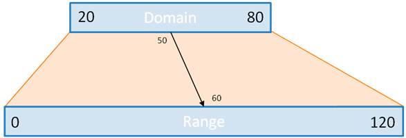

D3.js
Matteo Muscella
11 Aprile 2019
Cos'è D3.js?
Una libreria Javascript che permette di manipolare il DOM e in particolare l'SVG.
Creata da Mike Bostock - ex developer @nytgraphics - The New York Times Graphics Department.
d3.js on githubAgenda
Selezioni
Data joins & General Update Pattern
Scale continue, sequenziali, a bande,...
Assi
Agenda - dettagli
Selezioni
d3.select(), d3.selectAll()Data joins & General Update Pattern
selection.data()selection.[enter, merge, exit]()Scale continue, sequenziali, a bande,...
d3.scale[Linear, Pow, Log, Time, Sequential, Band]()Assi
d3.axis[Top, Right, Bottom, Left]()Assaggi di D3.js
Cryptocurrencies - mattmusc :) Sequences Sunburst Buy - Rent Calculator (Mike Bostock) NY Times - GDP Growth Google Music Timeline Every satellite orbiting Obama's 2014 State of the Union reactions on Twitter NYC Street Trees Lord of The Rings - Interactive LoomSelezioni - 1
I metodi di selezione accettano qualunque stringa selettore W3C.
d3.select() ritorna un array (di array) con il primo elemento che corrisponde al selettore.
d3.select("body")d3.select(".a-class")d3.select("#an-id")Selezioni - 2
d3.selectAll() ritorna un array (di array) con tutti gli elementi corrispondenti al selettore.
d3.selectAll("body")d3.selectAll(".a-class")d3.selectAll("#an-id")Selezioni - 3
const data = [ 5, 25, 11, 9 ];
// d3.select() ritorna una reference al primo elemento
// identificato dal selettore.
const svg = d3.select("body")
.append("svg")
.attr("width", 800)
.attr("heigth", 450);
// svg.selectAll() ritorna n reference a quanti
// elementi circle trova dentro al tag svg.
const circles = svg.selectAll("circle");
Operazioni sulle selezioni
È possibile eseguire diverse operazioni sulle selezioni:
selection.attr() // get / set di un attributoselection.style() // get / set di una property cssQueste sono quelle più comuni e quelle che ci serviranno.
Perché un'altra libreria che permette di fare quello che JQuery fa già?
Data join - 1
Nota: consideriamo un documento con body vuoto
const selection = d3.select("body").selectAll("p");Cosa succede quando eseguiamo
selection.data([1, 2, 4])?
La chiamata al metodo data effettua una data-join tra
- gli elementi presenti nel DOM
- ciascun dato dell'array, rispettando l'ordine.
Data join - 2
Nota: consideriamo un file html con body vuoto
const selection = d3.select("body").selectAll("p");Cosa succede quando eseguiamo
selection.data([1, 2, 4])?
La chiamata al metodo data effettua una data-join tra
- gli elementi presenti (o in futuro presenti) nel DOM
- ciascun dato dell'array, rispettando l'ordine.
Data join - 3
Dopo la chiamata al metodo data avrò accesso a 3 metodi:
- enter()
- exit()
- merge()
selection.enter() selection
Nella enter() selection vi sono tutti gli elementi dello stesso tipo di quelli della selezione e non presenti nel DOM.
selection.exit() selection
Nella exit() selection vi sono tutti gli elementi presenti nel DOM rimossi dall'array passato al metodo data()
selection.merge(another)
Questo metodo, data una selezione, ne ritorna un'altra che contiene gli elementi della mia selezione (la selezione su cui chiamo il metodo) e quelli della selezione passata nell'argomento.
Scale: concetto base
una scala è una funzione che trasforma un valore da un intervallo - dominio - ad un altro intervallo - range.
 Source d3-scaleLe scale in D3.js - esempi (1)
d3.scaleLinear().domain([10, 130]).range([0, 960]);d3.scalePow().domain([10, 130]).range([0, 960]);d3.scaleLog().domain([10, 130]).range([0, 960]);d3.scaleTime()
.domain([new Date(2000, 0, 1), new Date(2000, 0, 2)])
.range([0, 960]);d3.scaleQuantize()
.domain([0, 1])
.range(["brown", "steelblue"]); // range discreto// dominio e range discreti
d3.scaleOrdinal().domain(['A', 'B']).range(['blue', 'red'])Le scale in D3.js - esempi (2)

d3.scaleBand()
.domain(["Alice", "Bob", "Sergio"])
.range([0, 800])
.padding(0.2);Assi
È possibile creare gli assi in questo modo:
const xAxisGroup = g.append("g")
.attr("class", "x axis")
.attr("transform", "translate(0," + height +")");
// nella funzione di update:
// aggiorno la scala
x.domain(data.map(function(d){ return d.month }));
// chiamo l'asse passandogli la scala aggiornata
const xAxisCall = d3.axisBottom(x);
xAxisGroup.call(xAxisCall);Posso sostituire
d3.axisBottom() con Left, Right, Top